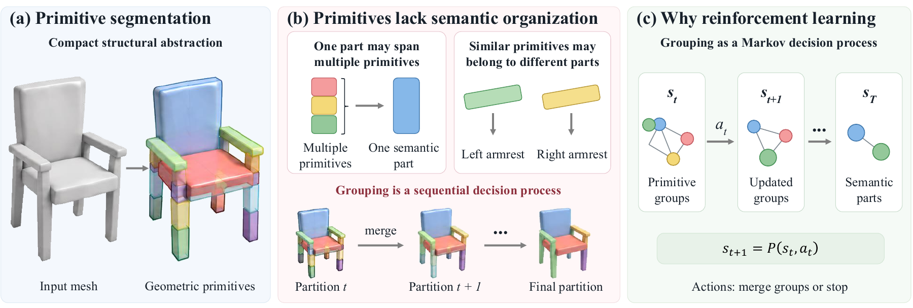
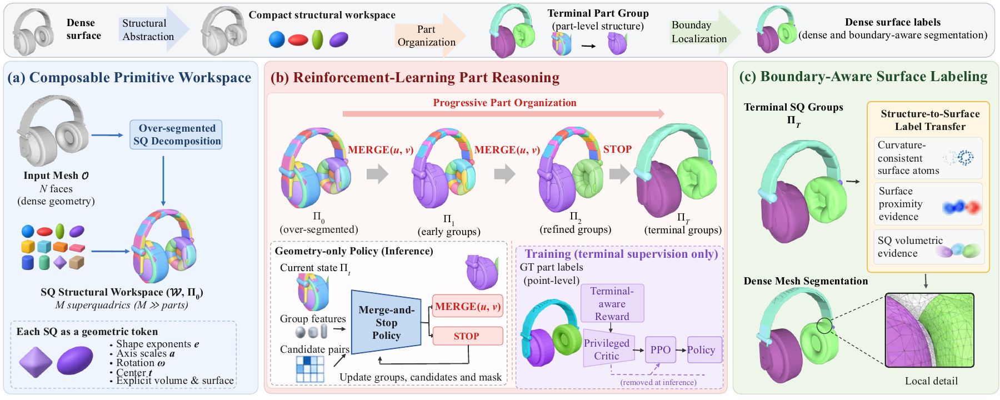
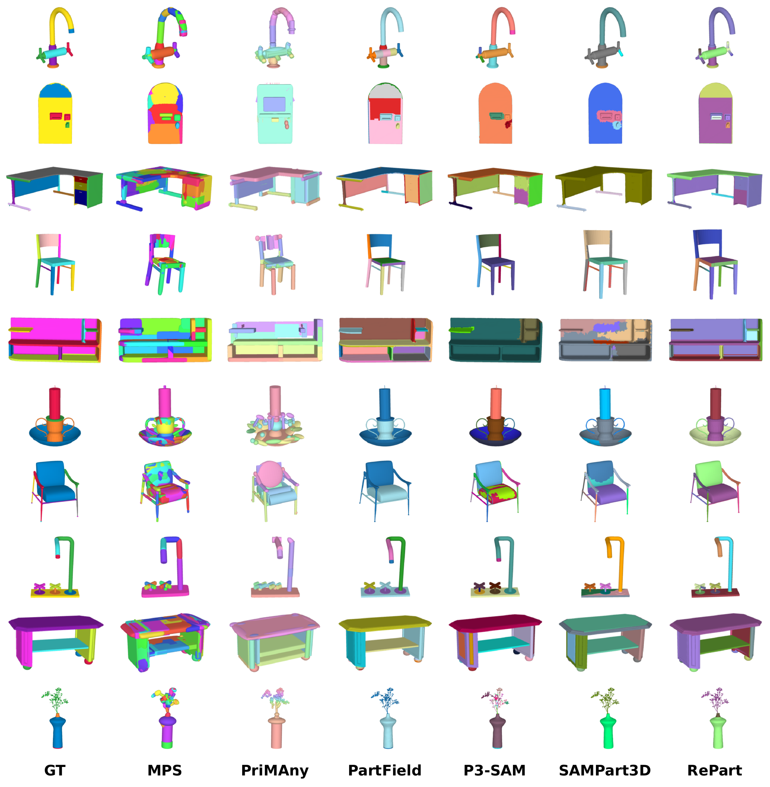

Composable Primitive Workspace
Over-segmented superquadrics provide stable, geometric tokens without fixing the final semantic partition.
Organize Primitives into Semantic Parts:
Reinforcement Reasoning for 3D Segmentation

The problem
Primitive-based 3D segmentation offers a compact and explicit alternative to dense surface prediction, but geometric decomposition alone does not determine which primitives belong to the same semantic part. One part may span several primitives, while nearby primitives with similar geometry may belong to different parts.
RePart treats primitive-to-part organization as a finite-horizon decision process. A merge-and-stop policy learns to group fine-grained superquadrics according to their effect on the final partition, then transfers the inferred identities back to the original mesh with boundary-aware surface labeling. Training uses part annotations, while the deployed policy relies on geometry alone.
How it works
RePart separates compact structural reasoning from boundary localization on the original surface.

Over-segmented superquadrics provide stable, geometric tokens without fixing the final semantic partition.
A policy repeatedly merges groups or stops. PPO evaluates decisions through their downstream effect on the partition.
Terminal group identities are projected onto the original mesh using surface proximity and volumetric evidence.
Quantitative results
Strong in-domain performance on PartNet, with metric-dependent transfer to 3DCoMPaT++ without target-dataset fine-tuning.
Each dataset is evaluated with four complementary partition metrics.
| Method | mIoU ↑ | RI ↑ | VoI ↓ | SC ↑ |
|---|---|---|---|---|
| MPS | 0.3169 | 0.5266 | 1.0213 | 0.5267 |
| PartField | 0.5249 | 0.7877 | 1.0810 | 0.6502 |
| P3-SAM | 0.4858 | 0.6966 | 1.2238 | 0.5833 |
| SAMPart3D | 0.4229 | 0.6999 | 1.1996 | 0.5862 |
| PriMAny | 0.2440 | 0.5231 | 2.6506 | 0.2476 |
| RePart | 0.5460 | 0.7965 | 0.8471 | 0.6891 |
| Method | mIoU ↑ | RI ↑ | VoI ↓ | SC ↑ |
|---|---|---|---|---|
| MPS | 0.2125 | 0.4371 | 1.2043 | 0.4371 |
| PartField | 0.3483 | 0.6914 | 1.2998 | 0.5302 |
| P3-SAM | 0.5003 | 0.7455 | 1.3783 | 0.5606 |
| SAMPart3D | 0.4144 | 0.7089 | 1.5508 | 0.5304 |
| PriMAny | 0.2477 | 0.5932 | 2.4509 | 0.2796 |
| RePart | 0.4476 | 0.7575 | 1.2838 | 0.5790 |
Metrics: mIoU measures part overlap, RI pairwise partition agreement, VoI partition information difference, and SC region covering. Results match the manuscript's average partition-quality table.
On 3DCoMPaT++, RePart's mIoU is below P3-SAM (0.4476 vs. 0.5003), while its RI and SC are higher than the compared methods. Transfer is therefore metric-dependent.
Category view
Jointly fine-tuned policy; no 3DCoMPaT++ fine-tuning.
| Dataset | Furniture | Containers | Daily-use | Average |
|---|---|---|---|---|
| PartNet | 0.4247 | 0.6456 | 0.5432 | 0.5460 |
| 3DCoMPaT++ | 0.3703 | 0.5149 | 0.4607 | 0.4476 |
Qualitative results
Examples from PartNet and 3DCoMPaT++ compare RePart with ground truth and five baseline methods.

Reference
@article{gong2026repart,
title = {Organize Primitives into Semantic Parts: Reinforcement Reasoning for 3D Segmentation},
author = {Gong, Xiaoming and Wu, Ruoyu and Sun, Zhenhong and Chen, Chunlin and Dong, Daoyi and Mo, Huadong and Wang, Zhi and Li, Hongdong},
journal = {arXiv preprint arXiv:2610.04602},
year = {2026},
url = {https://arxiv.org/abs/2610.04602}
}